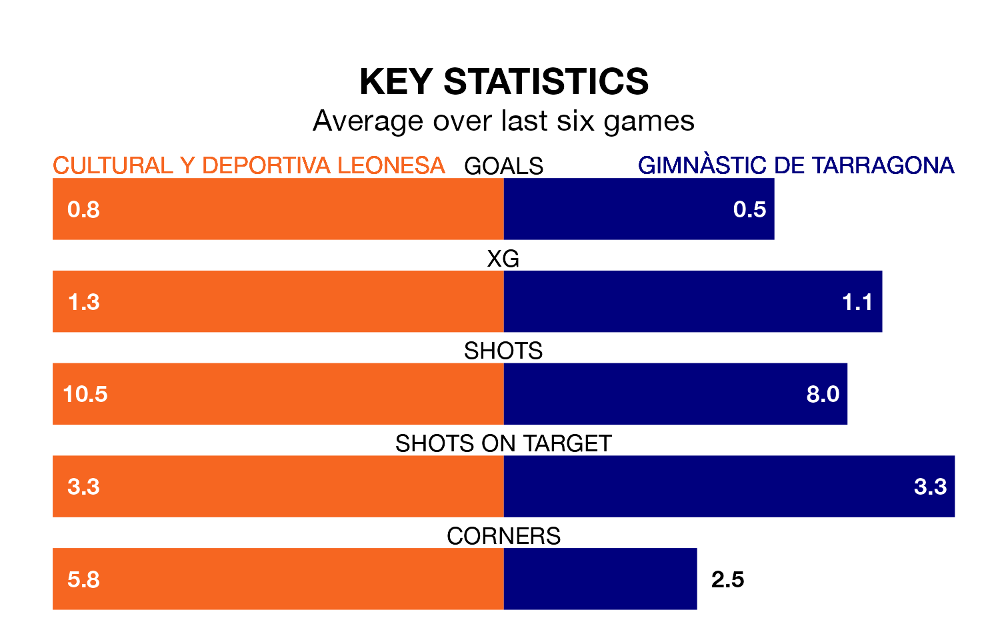

Two of Primera Division RFEF Group 1's meanest defences go head-to-head at the Estadio Municipal Reino de León on Sunday, when Gimnàstic de Tarragona visit Cultural y Deportiva Leonesa.
No teams have conceded fewer goals than Gimnàstic de Tarragona to date: the away side have let in just 19 goals in 33 games.
Cultural y Deportiva Leonesa have conceded 24 goals in 33 games, giving them the fourth tightest back line so far this season.
Key to Gimnàstic de Tarragona's home form has been Alberto Varó Lara, who has allowed 0.57 goals past him per 90 minutes, compared to 0.52 for Miguel Bañuz Antón in the opposite net.
Gimnàstic de Tarragona are third in the table after 33 games, of which they have won 17 and drawn nine, earning 60 points.
Cultural y Deportiva Leonesa are three places behind the visitors in sixth, with 13 wins and 13 draws putting them on 52 points.
The home team are in mixed form in Primera Division RFEF Group 1, with two wins and three draws from their last six games.
With three wins and a draw over that period, Gimnàstic de Tarragona's form is slightly better – they have taken 10 points from 18, compared to Cultural y Deportiva Leonesa's nine.
Cultural y Deportiva Leonesa's last match was on April 20, a 2-0 loss against Deportivo La Coruña.
Gimnàstic de Tarragona beat Celta de Vigo B 1-0 last time out, on April 21, with Pablo Fernández Blanco on the scoresheet.
Updated: 07:59 (UTC), 26/04/24